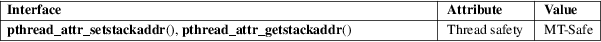

pthread_attr_setstackaddr, pthread_attr_getstackaddr − set/get stack address attribute in thread attributes object
POSIX threads library (libpthread, −lpthread)
#include <pthread.h>
[[deprecated]]
int pthread_attr_setstackaddr(pthread_attr_t
*attr, void *stackaddr);
[[deprecated]]
int pthread_attr_getstackaddr(const pthread_attr_t
*restrict attr,
void **restrict stackaddr);
These functions are obsolete: do not use them. Use pthread_attr_setstack(3) and pthread_attr_getstack(3) instead.
The pthread_attr_setstackaddr() function sets the stack address attribute of the thread attributes object referred to by attr to the value specified in stackaddr. This attribute specifies the location of the stack that should be used by a thread that is created using the thread attributes object attr.
stackaddr should point to a buffer of at least PTHREAD_STACK_MIN bytes that was allocated by the caller. The pages of the allocated buffer should be both readable and writable.
The pthread_attr_getstackaddr() function returns the stack address attribute of the thread attributes object referred to by attr in the buffer pointed to by stackaddr.
On success, these functions return 0; on error, they return a nonzero error number.
No errors are defined (but applications should nevertheless handle a possible error return).
For an explanation of the terms used in this section, see attributes(7).

None.
glibc 2.1. Marked obsolete in POSIX.1-2001. Removed in POSIX.1-2008.
Do not use these functions! They cannot be portably used, since they provide no way of specifying the direction of growth or the range of the stack. For example, on architectures with a stack that grows downward, stackaddr specifies the next address past the highest address of the allocated stack area. However, on architectures with a stack that grows upward, stackaddr specifies the lowest address in the allocated stack area. By contrast, the stackaddr used by pthread_attr_setstack(3) and pthread_attr_getstack(3), is always a pointer to the lowest address in the allocated stack area (and the stacksize argument specifies the range of the stack).
pthread_attr_init(3), pthread_attr_setstack(3), pthread_attr_setstacksize(3), pthread_create(3), pthreads(7)